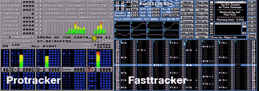

What is a tracker?
A music tracker - or tracker - is a type of music sequencer: software to create music by defining a sequence of samples to be played at a certain time with a certain pitch.
The name "tracker" comes from "the Ultimate Soundtracker" written by Karsten Obarski and released on the Amiga platform in 1987.
A huge number of other tracker programs followed, steadily improving on the concept, with Protracker as the best known example.
After the Amiga, they made the jump to the PC, spearheaded by FastTracker.

Even today the tracker concept is still used in modern music software like Renoise, Radium and SunVox and it even has a super cool dedicated hardware version.
Tracker programs were made by developers for developers:
You don't enter notes on a musical bar, you enter notes by typing hexadecimal numbers in a grid and you apply effects by entering even more numbers.
Unlike traditional music notation, time is usually represented vertically instead of horizontally, so sequential notes are underneath each other and playback goes from top to bottom.
Multiple numbers/notes in the same column form a "track", multiple tracks form a "pattern", and multiple patterns form a song.
Or, the other way around: a song is made of multiple patterns following each other, where patterns are made of tracks of notes.
To get a feel of what's it all about, we recommend this highly entertaining video made by @Ctrix
For a better understanding of how to use trackers, here are some useful pointers to get you started:
A quick way to get a first idea of how it works, and what the possibilities are, is to load BassoonTracker with a simple piano intro, such as Romeo Knight's "Boessendorfer P.S.S.". And then, load some of the suggested songs displayed in the bottom left of the interface.